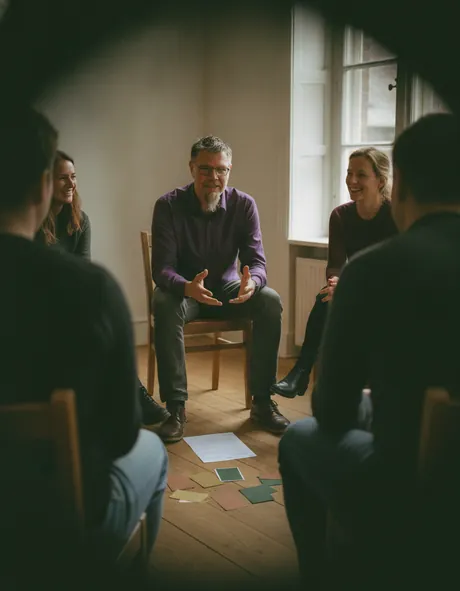

Wirkungsberatung
Eine Impact Up Wirkungsberatung schaut ganzheitlich auf eure Wirkung. Wir haben schon auf der Startseite vier zentrale Wirkungsperspektiven bei Impact Up aufgezeigt, je nachdem, worum es gerade geht. Wie immer gehen wir systemisch an eine Beratung heran, starten also bei euren Themen. Dennoch, für uns geht es darum, Wirkung zu entwickeln, also abzustimmen und zu klären, dann Wirkung zu entfalten, also tatsächlich in die Welt zu bringen, und zuletzt zu verbinden, also mit anderen in den Austausch zu gehen, der wichtig ist, um Kohärenz und Kooperation zu schaffen. Hier bieten wir die Wirkungsberatung als Kernelement von Impact Up an. Wir geben eurer Wirkung Raum.

Wirkung entwickeln, entfalten, verbinden.
Dieses Angebot haben wir bei Impact Up auf Basis der Gründungsidee des Instituts entwickelt. Wir sind ein Institut für systemische Wirkungsorientierung, und entsprechend möchten wir auch Wirkungsberatung so durchführen, wie wir Wirkung sehen. Wir beginnen mit der Reflexion, also dem Bewusstwerden eurer Wirkung, bevor wir auf die relevanten Perspektiven schauen: ihre Resonanz mit den Menschen, ihr Zusammenspiel mit der Organisationsstruktur, ihre Kohärenz im Wirkungsfeld und eventuell auch die Kooperation der Gesellschaft. Bei der Entwicklung von Wirkung passen wir sie gemeinsam mit denen an, die auf sie hinarbeiten, bis sie nach innen stimmig ist: bis Menschen in ihr ihren eigenen Sinn finden und die Organisation sich in ihr wiedererkennt.
Beim Entfalten der Wirkung schauen wir, wie sie durch die Organisation wirksam wird: Teams, Rollen und Strukturen so ausrichten, dass aus vielen Teilen ein Ganzes wird. Und Verbinden heißt dann: die Wirkung nach außen andocken, an das Wirkungsfeld und die Gesellschaft, in denen sie etwas verändern soll. Die praktische Arbeit beginnt meist dort, wo ihr gerade steht, und nicht nach einem fixen Schema.

Meistens möchte eine Organisation eine Wirkung erreichen, aber nicht immer: Wir wollen Wirkung auch mit kleinen Initiativen gestalten und mit großen Netzwerken entstehen lassen. Wir wollen systemische Wirkungsorientierung immer dort, wo es die Möglichkeit gibt, etwas Gutes zu erreichen. Manchmal ist ein System noch nicht an seiner Wirkung orientiert, und manchmal ist die Wirkung noch nicht so formuliert, wie das System eigentlich wirken will. Wir setzen da an, wo es sinnvoll ist, und bringen zahlreiche Methoden zur Wirkungsorientierung mit: Theory of Change, Outcome Mapping, Wirkungslogiken mit Indikatoren. Und da wir systemisch beraten, geht es immer darum, dass ihr eure eigene Wirkung entwickelt, entfaltet und mit anderen verbindet; wir unterstützen dabei.
Durch eine laufende Ausbildung in systemischer Organisationsentwicklung und unser Netzwerk können wir auch größere Beratungen organisieren. Stefan bringt die Erfahrung aus zahlreichen Wirkungsplanungen mit, und hat an zwei größeren kokreativen Strategieentwicklungen mit vielen Beteiligten mitgewirkt. Was ihr auch braucht, schreibt uns doch erstmal.